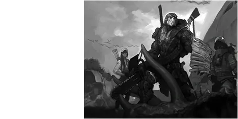

หน้าแรก › สังคมและเศรษฐกิจ
 แคลน ใช้ได้
แคลน ใช้ได้
รวมกลุ่มกับผู้เล่นอื่น แบ่งยศ ใช้ที่ดินและกล่องของร่วมกัน บริจาคเข้ากองทุนเพื่อเพิ่มเลเวลแคลน และจับพันธมิตรกับแคลนอื่น
บางหัวข้อในหน้านี้ยังไม่เสร็จ

แคลน คือกลุ่มผู้เล่นที่เล่นด้วยกันถาวร — มีหัวหน้า มียศ มีห้องแชทของตัวเอง ใช้ ดินแดนแคลน และกล่องเก็บของร่วมกันได้ ยิ่งสมาชิกบริจาคเข้า กองทุนแคลน มาก แคลนยิ่งเลเวลสูง รับสมาชิกได้มากขึ้น เปิดช่องพันธมิตรเพิ่ม และได้บัพลดของตกตอนตาย
ทำอะไรได้บ้าง
- สร้างแคลนเอง หรือขอเข้าร่วมแคลนที่มีอยู่
- แบ่งยศ ตั้งชื่อยศ กำหนดว่ายศไหนทำอะไรได้
- คุยในห้องแชทแคลน (เห็นกันทุกเกาะ)
- ติดธงเกียรติยศแคลนที่หลังตัวละคร
- ประกาศ ดินแดนแคลน แล้วสร้าง/ใช้กล่องเก็บของร่วมกันตามสิทธิ์ของยศ
- บริจาค ทีสโตน เข้ากองทุนแคลน → เลเวลแคลนขึ้น
- จับพันธมิตรกับแคลนอื่น
- วิจัยแคลนที่ศูนย์วิจัย (จ่ายจากกองทุน)
สร้างและเข้าร่วมแคลน ใช้ได้
- เปิดเมนู แคลน → การสร้างแคลน → ตั้งชื่อ แล้วจ่ายค่าสร้าง
- หรือค้นหาชื่อแคลนแล้วกด ขอเข้าร่วม — รอคนที่มีสิทธิ์อนุมัติ (ยกเลิกคำขอเองได้)
- ถ้ามีคน ชวน คุณ จะมีข้อความขึ้นบนจอ — ไปที่แคลนนั้นแล้วกดขอเข้าร่วม จะเข้าได้ทันทีไม่ต้องรออนุมัติ
| เรื่อง | ค่า |
|---|---|
| ค่าสร้างแคลน | 5,000 ทีสโตน |
| ชื่อแคลน | 2–16 ตัวอักษร · ห้ามซ้ำกับแคลนอื่น |
| อยู่ได้ทีละ | 1 แคลน |
| ประกาศแคลน / แนะนำแคลน | ยาวสุด 300 / 500 ตัวอักษร |
| รูปสัญลักษณ์แคลน | ไฟล์ไม่เกิน 4 KB |
ออกจากแคลน: ถ้าหัวหน้าออก ตำแหน่งหัวหน้าจะตกไปที่คนยศสูงสุดถัดไป (ยศเท่ากัน = คนที่เข้าก่อน) · ถ้าคนสุดท้ายออก แคลนจะถูกยุบ — ดินแดนแคลนและสิ่งปลูกสร้างทั้งหมดตกเป็นของหัวหน้าคนสุดท้าย
ยศและสิทธิ์ ใช้ได้
แคลนใหม่มี 3 ยศ ชื่อยศเริ่มต้นเป็นภาษาไทย (หัวหน้าแก้ชื่อได้)
| ยศ | สิทธิ์ |
|---|---|
| หัวหน้า | ทำได้ทุกอย่าง · เปลี่ยนชื่อแคลน · จัดการพันธมิตร · โอนตำแหน่งหัวหน้า |
| รองหัวหน้า | ครบ 5 สิทธิ์: อนุมัติคนเข้า · ปรับยศ/เตะสมาชิก · แก้ข้อมูลแคลน · จัดการดินแดนแคลน · วิจัย |
| สมาชิก | ไม่มีสิทธิ์พิเศษ |
- สร้างยศเพิ่มได้ รวมไม่เกิน 10 ยศ · ชื่อยศ 1–12 ตัวอักษร · ลากเรียงลำดับยศได้
- คนที่มีสิทธิ์ปรับยศ จัดการได้เฉพาะคนที่ยศ ต่ำกว่า ตัวเอง · ไม่มีใครเตะหรือลดยศหัวหน้าได้
- หัวหน้าตั้งใครเป็นหัวหน้า = โอนตำแหน่ง (หัวหน้าเดิมลงไปเป็นยศสูงสุดรองลงมา)
- ลบยศได้ สมาชิกในยศนั้นย้ายไปยศอื่นให้อัตโนมัติ
แชทแคลนและการแจ้งเตือน ใช้ได้
- ห้องแชท แคลน คุยกับสมาชิกได้ทุกเกาะ
- ตั้งค่าการแจ้งเตือนแต่ละช่องทางได้เอง เซิร์ฟจำค่าไว้ให้ (ค่าเริ่มต้น = ปิดทุกช่อง)
ธงเกียรติยศแคลน ใช้ได้
สมาชิกแคลนติดธงที่หลังตัวละครได้ คนอื่นมองเห็น — มี 3 แบบ: แข็งแรง · ทรงพลัง · ทำลายไม่ได้ เซิร์ฟนี้ไม่มีสงครามแคลน จึงให้สมาชิกทุกคนติดได้ทุกแบบ · ออกจากแคลน/ถูกเตะ/แคลนยุบ = ธงถูกถอดอัตโนมัติ
ดินแดนแคลนและกล่องเก็บของ ใช้ได้
- หัวหน้า หรือยศที่มีสิทธิ์จัดการดินแดน ประกาศ ดินแดนแคลน ได้บน เกาะเสถียร · ขยายได้ถึง 8 ช่อง (คนกดขยายเป็นคนจ่ายค่าขยาย)
- สมาชิกสร้างของบนดินแดนแคลนได้ และของของสมาชิกไม่นับว่าทับที่ของคนอื่น
- สิทธิ์เริ่มต้นบนดินแดนแคลน: หัวหน้า/ผู้จัดการดินแดน = ทำได้ทุกอย่าง · สมาชิก = เข้า ใช้ ฝาก หยิบ สร้าง (รื้อไม่ได้) — หัวหน้าปรับสิทธิ์รายยศได้
- กล่อง/คลังแต่ละชิ้นตั้งได้ว่ายศไหนใช้ได้ และ หยิบได้วันละกี่ชิ้น (ไม่จำกัด / ห้าม / กำหนดจำนวน · นับรอบ 24 ชั่วโมง)
- เซิร์ฟจดบันทึกว่าใครฝาก/หยิบอะไรจากกล่องบนดินแดนแคลน (เก็บล่าสุด 300 รายการต่อแคลน)
อ่านเรื่องที่ดินทั่วไปที่ ที่ดิน · กล่องเก็บของที่ ที่เก็บของ · การผุพังที่ การผุพัง
กองทุนแคลนและเลเวลแคลน ใช้ได้
สมาชิกทุกคนกด บริจาค ทีสโตน เข้า กองทุนแคลน ได้ · บริจาค 1 ทีสโตน = exp แคลน 1 · เงินกองทุนถอนออกเป็นของส่วนตัวไม่ได้ ใช้ได้กับการวิจัยแคลนเท่านั้น
| เลเวลแคลน | exp สะสมที่ต้องมี | สมาชิกสูงสุด | ช่องพันธมิตร |
|---|---|---|---|
| 1 | 0 | 10 | 2 |
| 2 | 30,958 | 10 | 2 |
| 3 | 140,728 | 15 | 2 |
| 5 | 968,964 | 20 | 3 |
| 6 | 2,047,646 | 20 | 3 |
| 10 | 23,372,897 | 30 | 4 |
| 15 | 166,620,941 | 40 | 5 |
| 20 | 402,966,448 | 50 | 6 |
| 25 (สูงสุด) | 733,242,379 | 50 | 7 |
บัพลดของตกตอนตาย: แคลนเลเวล 6 ขึ้นไป สมาชิกทุกคนเสียของตอนตายน้อยลง — จำนวนของที่ตกเหลือ 0.2 × (1 − 0.0125 × เลเวลแคลน) เท่าของปกติ เช่น เลเวล 6 = 18.5% ของปกติ · เลเวล 10 = 17.5% ของปกติ (ดู การตาย)
| เรื่อง | ค่า |
|---|---|
| บริจาคต่อครั้ง | 1 – 99,999,999 ทีสโตน |
พันธมิตร ใช้ได้
เฉพาะ หัวหน้า จัดการพันธมิตรได้ ในเมนู พันธมิตร ของแคลน
- ค้นหาแคลนอื่น → เสนอเป็นพันธมิตร
- อีกฝ่ายตอบรับหรือปฏิเสธภายใน 24 ชั่วโมง — ไม่ตอบ = ถือว่าปฏิเสธ
- จะเลิกเป็นพันธมิตร: เสนอยกเลิก (อีกฝ่ายตอบใน 24 ชั่วโมง · ไม่ตอบ = ยังเป็นพันธมิตรต่อ) หรือ ยกเลิกพันธมิตร ทันที — แบบทันทีช่องพันธมิตรของ ฝั่งที่กดยกเลิก จะถูกล็อก 24 ชั่วโมง
- ทั้งสองแคลนต้องมีช่องพันธมิตรว่าง (จำนวนช่องตามเลเวลแคลน ดูตารางด้านบน)
- พันธมิตรของพันธมิตร ไม่นับเป็นพันธมิตรของคุณ
- แคลนถูกยุบ = เลิกพันธมิตรทุกคู่ทันที
วิจัยแคลน ใช้ได้
ที่ ศูนย์วิจัย บนดินแดนแคลนของตัวเอง ยศที่มีสิทธิ์วิจัยสั่งวิจัยได้ · จ่ายจาก กองทุนแคลน ตอนเริ่ม · แต่ละหัวข้อทำได้ครั้งเดียวต่อแคลน · ศูนย์หนึ่งทำได้ทีละ 1 หัวข้อ
| ศูนย์วิจัย | หัวข้อ | ราคา (ทีสโตน) | เวลา |
|---|---|---|---|
| ศูนย์วิจัยการเก็บเกี่ยว | วิจัยการเก็บพืช · วิจัยการเก็บแร่ · วิจัยการแล่เนื้อสัตว์ | 80,000 | 1 วัน |
| ศูนย์วิจัยการสร้าง | วิจัยการสร้างเครื่องมือ · วิจัยการสร้างชุด · วิจัยการทำอาหาร · วิจัยการก่อสร้าง | 80,000 | 1 วัน |
| ศูนย์วิจัยการสำรวจ | วิจัยการเอาชีวิตรอด · วิจัยระบบนิเวศวิทยา | 80,000 | 1 วัน |
| ศูนย์วิจัยการต่อสู้ | วิจัยการโจมตี · วิจัยการป้องกัน · วิจัยการฟื้นตัว | 80,000 | 1 วัน |
| ศูนย์วิจัยคุณภาพ | วิจัยการต่อสู้ที่มีคุณภาพ | 150,000 | 1 วัน |
| ศูนย์วิจัยคุณภาพ | วิจัยการจับที่มีคุณภาพ · วิจัยการเก็บรวบรวมที่มีคุณภาพ | 150,000 | 2 ชั่วโมง |
ส่วนที่ยังไม่เสร็จ ยังไม่เสร็จ
- ผลของการวิจัยแคลน (เก็บของ คราฟต์ ต่อสู้ ฯลฯ) — บันทึกว่าวิจัยแล้วแต่ยังไม่ส่งผล และยังไม่มีไอคอนบัพ
- บัพเลเวลแคลนอื่น ๆ นอกจากลดของตก (exp เพิ่ม · ลดค่าเดินเรือ/วาร์ป · ทีสโตนเพิ่ม) — ยังไม่มีผล
- แบบแปลนอาคารแคลน (ศูนย์วิจัย · กล่องเก็บของแคลน · ธงเขตแดน · กระถางธูป · หอแคลน) — ยังไม่มีทางเรียนในเซิร์ฟนี้ และยังไม่ปลดตามเลเวลแคลน
- จำนวนดินแดนแคลนสูงสุดตามเลเวล และเงื่อนไขเลเวลแคลนก่อนประกาศดินแดน — ยังไม่บังคับ
- ยึดหลุมวาร์ปส่งสาร / เก็บภาษีเข้ากองทุน / สงครามแคลน — ยังไม่เปิด